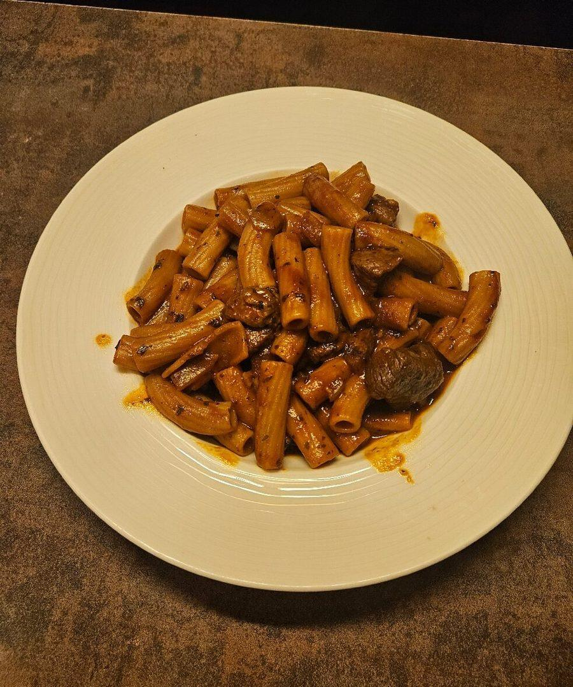
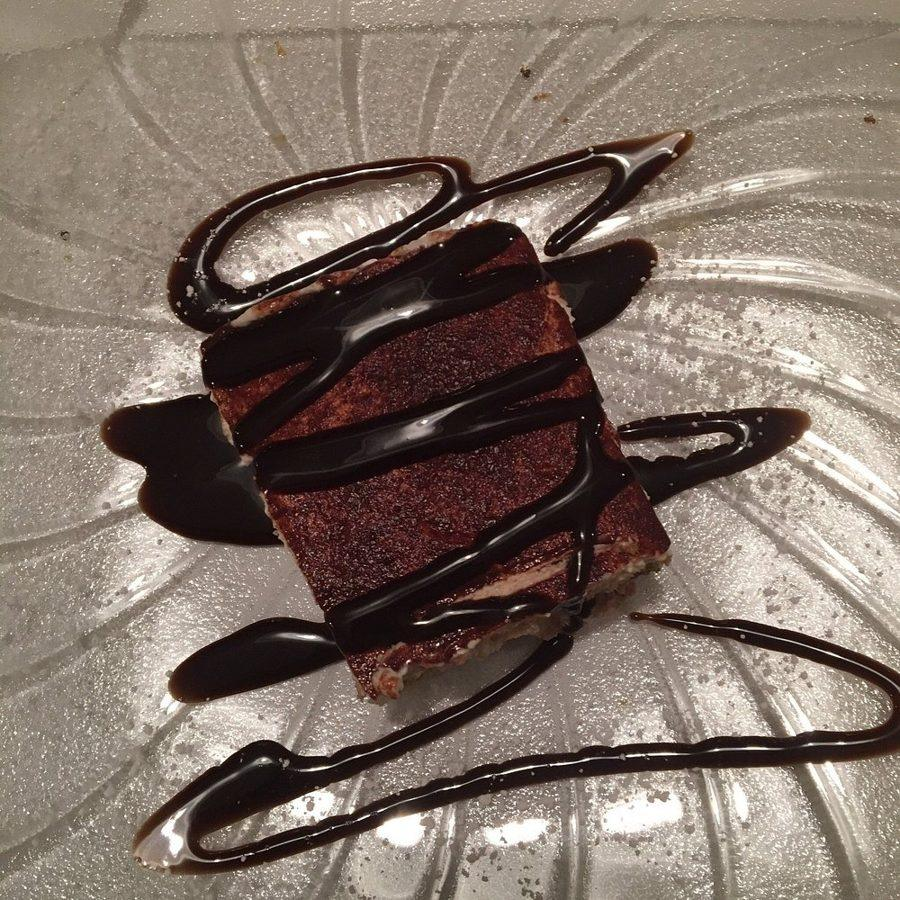
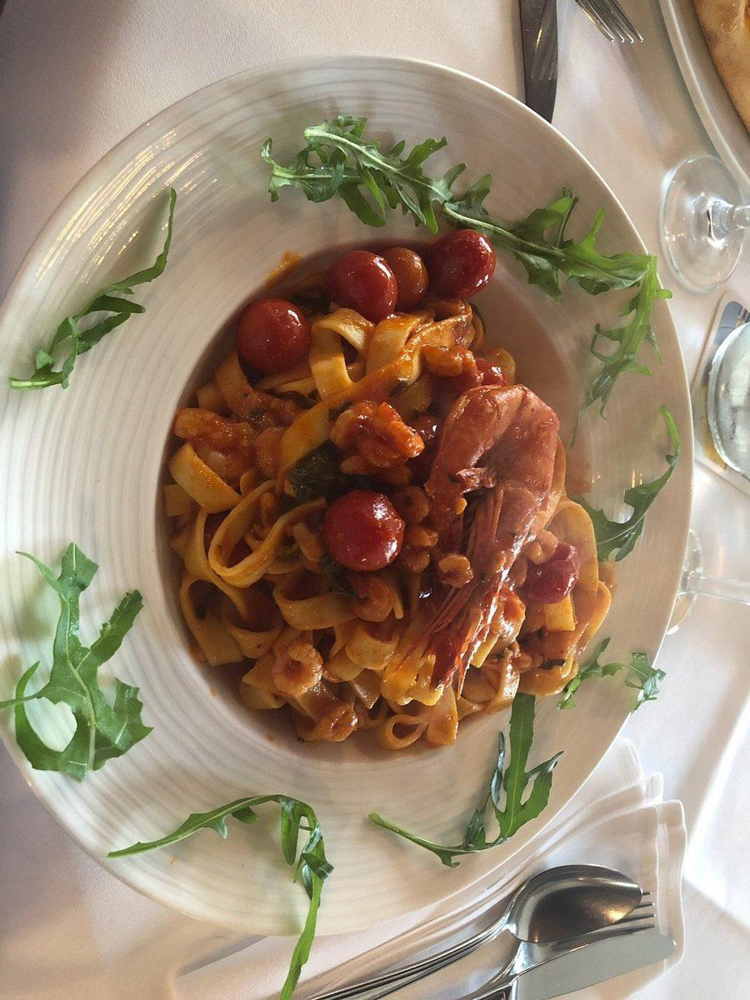

Seit 1982 in Karlsruhe-Neureut
La Signora
Knusprige Pizza aus dem Steinofen, hausgemachte Pasta und die Herzlichkeit einer italienischen Familie – seit über 40 Jahren mitten in Neureut.
Steinofen-Pizza
Knusprig gebacken, ganz traditionell im Steinofen.
Frische Zutaten
Mediterran, saisonal und mit Liebe ausgewählt.
Familiäre Atmosphäre
Platz für rund 80 Gäste – herzlich willkommen.
Unsere Geschichte
Die Philosophie hinter der weißen Schürze
1982 eröffnete Francesco Piadine die La Signora mit einem einfachen Ziel: die beste italienische Küche mit allen zu teilen.
„Wir kochen für Sie und Ihre Freunde.“
Ob Familienfeier, Geschäftsessen oder ein spontanes Date – bei uns finden Sie eine heimelige Atmosphäre, in der italienisches Lebensgefühl auf Karlsruher Gastfreundschaft trifft.
Foto folgt
Impressionen
Ein Blick in unser Ristorante



Kontakt & Öffnungszeiten
Wir freuen uns auf Ihren Besuch
- AdresseBärenweg 33, 76149 Neureut (Karlsruhe)
- Telefon0721 707160
- E-Mailkacc1105@gmail.com
| Montag – Sonntag | 12:00 – 14:30 Uhr |
|---|---|
| 17:00 – 22:00 Uhr |